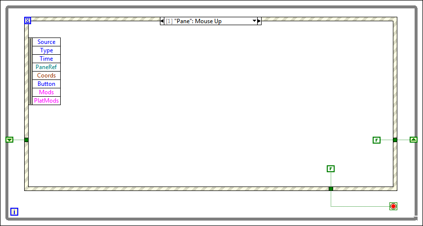

The user aborts a drag-and-drop operation if he or she releases the mouse button over any location on the front panel other than the drop target. To end the drag-and-drop operation when the user releases the mouse button, you must detect the Mouse Up event and prevent the drag from starting if the event occurs. Providing a FALSE value to the shift register prevents the VI from starting the drag if the Mouse Up event occurs.
Create the following block diagram to detect when the user aborts a drag-and-drop operation.
After you detect when the user aborts a drag-and-drop operation, start the drag-and-drop operation by providing the drag data.